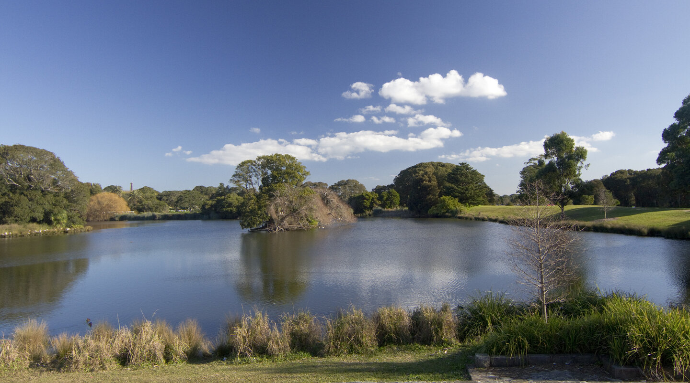

11月23日 周一 10:00–12:3011月30日 周一 10:00–12:3012月7日 周一 10:00–12:30
普通话长者电脑课（Parramatta 市中心）
普通话 · 免费 · 须预约 · Parramatta 图书馆，离 Epping、Carlingford 较远
活动已结束

先打 131 450（免费），说 Mandarin 或 Cantonese，请口译员帮你接通要找的部门。
看详细说明 →先查年龄、居住年限和收入资产，再决定是否申请。Centrelink 多语言热线 131 202。
看详细说明 →打 My Aged Care 1800 200 422（先打 131 450 请口译员转接），申请评估。
看详细说明 →护理类服务政府全额付；清洁等家务按收入资产付一部分；按官网，2026 年 10 月起个人照护由政府全额资助。
看详细说明 →2025 年 11 月 1 日起生效，以长者权利为基础，和 Support at Home 同一天开始。
看详细说明 →OPAN 1800 700 600，免费、保密、独立；也可以向照护质量委员会正式投诉。
看详细说明 →打 Carer Gateway 1800 422 737，问照护者支持和临时替代照护。
看详细说明 →打失智症热线 1800 100 500；中文可先打 131 450 请口译员转接。
看详细说明 →Lifeline 13 11 14 或 Beyond Blue 1300 22 4636，都是 24 小时、免费。有生命危险拨 000。
看详细说明 →先看家庭医生开“心理健康治疗计划”；按 healthdirect 说明，每年可报销 10 次个人加 10 次小组咨询。
看详细说明 →申请当天要未满 65 岁，是澳洲公民或永久居民，有永久性损伤。NDIS 专线 1800 800 110。
看详细说明 →申请当天要未满 65 岁。65 岁以上，NDIS 会介绍照护服务，一般走 My Aged Care。
看详细说明 →按地区看麻将、英语班、电脑课、节日活动，写清楚免不免费、要不要预约。
去找活动 →平时找家庭医生（GP）；不确定去哪里，打 healthdirect 1800 022 222；危及生命拨 000。
官方：找医疗服务 →新州有三种：家有孩子的家庭补贴、持低收入卡的补贴、持长者健康卡的长者补贴，申请办法各不同。
看详细说明 →先查 NSW Seniors Card 资格，持这张卡可申请 Gold Opal 交通卡。
看详细说明 →看 Family Tax Benefit；托儿费看 Child Care Subsidy；新州有 $50 运动才艺券；生宝宝有 Parental Leave Pay。新居民要先查等待期。
看详细说明 →已经汇款，立即联系自己的银行；澳洲网络安全热线 1300 292 371 可协助判断下一步。
看详细说明 →立遗嘱、授权书、监护人和预先照护意愿，先看政府的说明，再办理。
看详细说明 →新州长者受虐待求助热线 1800 628 221，可以匿名。
看详细说明 →11月23日 周一 10:00–12:3011月30日 周一 10:00–12:3012月7日 周一 10:00–12:30
普通话 · 免费 · 须预约 · Parramatta 图书馆，离 Epping、Carlingford 较远
活动已结束

11月23日 周一 12:00–16:0011月30日 周一 12:00–16:0012月7日 周一 12:00–16:0012月14日 周一 12:00–16:00
免费 · 车士活图书馆
活动已结束
11月23日 周一 18:00–20:0011月30日 周一 18:00–20:00
免费 · 须预约 · 满了过几天再看 · 车士活图书馆
活动已结束
11月24日 周二 09:30–11:30
普通话 · 免费 · 整期预约 · 车士活图书馆
活动已结束

11月24日 周二 10:00–12:00
免费 · 55 岁以上 · Carlingford 图书馆
活动已结束
11月24日 周二 9:00–17:0012月1日 周二 9:00–17:0012月8日 周二 9:00–17:0012月15日 周二 9:00–17:00
普通话 · 免费 · 须预约 · Parramatta 图书馆，离 Epping、Carlingford 较远
活动已结束
11月26日 周四 10:30–12:00
免费 · 须预约 · Epping 图书馆
活动已结束

12月2日 周三 11:00–12:30
免费 · 须预约 · 好市围 Hurstville 图书馆
活动已结束
周一、四、五上午 · 各级别时间见报名页
免费 · 需预约 · 本学期至12月4日 · 车士活图书馆
活动已结束
12月5日 周六 16:30–21:00
免费 · 不用预约 · 好市围 Carss Park
活动已结束
周二 10:30–12:00 初级班 · 至 12 月 17 日
免费 · 须预约 · 周二班在 Kogarah 的 Clive James 图书馆
活动已结束
2027年2月13日 周六 12:00–21:00
免费 · 2027 年 2 月 13 日 · 伊士活
活动已结束
周四 13:00–15:00
费用及名额请电话确认 · Dougherty 社区中心
活动已结束
周三 10:00–15:00
29.50 澳元含午餐 · 名额请致电 · Dougherty 社区中心
活动已结束

健康 · 新南威尔士州
从家居环境、鞋子和平衡能力入手，查看州政府的中文图文指南。
活动已结束
健康 · 新南威尔士州
了解骨骼健康与日常活动、饮食之间的关系。
活动已结束
健康 · 新南威尔士州
下载一页中文表格，预先写下跌倒后可以联系谁。
活动已结束

生活服务 · 澳洲全国
Age Pension 是政府养老金。先查年龄、居住条件和收入资产评估，再决定是否申请。
活动已结束

生活服务 · 全澳
联系 My Aged Care，说明洗澡、做饭、出门等哪些事情开始吃力，询问政府资助的照护和评估。
活动已结束
生活服务 · 新南威尔士州
持有效联邦长者健康卡（Commonwealth Seniors Health Card）的自费退休人士，可查新州长者电费补贴。
活动已结束
生活服务 · 全澳
家庭照护者可联系 Carer Gateway，询问照护者支持服务和临时替代照护。
活动已结束
生活服务 · 全澳
OPAN 提供免费、保密、独立的长者照护权益咨询，协助使用或寻求政府资助照护的人表达意愿。
活动已结束
生活服务 · 新南威尔士州
先查 NSW Seniors Card 资格，持这张卡可申请 Gold Opal 交通卡。
活动已结束
生活服务 · 新南威尔士州
长者志愿探访计划为符合条件、感到孤单或缺少交往的长者免费配对志愿者。
活动已结束

生活服务 · 新州全境
找到负责你所在区域的租客咨询服务，询问维修、租金调整或退租押金。
活动已结束
生活服务 · 悉尼及新州
长者可以先找调解员聊一聊，把自己的意愿带进家庭讨论。
活动已结束
生活服务 · 澳洲全国
如果已经汇款，立即联系自己的银行或信用合作社。网络安全热线也可协助判断下一步。
活动已结束
办事 · 澳洲全国
打电话时可以先找免费口译员，请对方帮忙接通要找的政府部门或机构。
活动已结束
安全 · 新南威尔士州
新州有长者受虐待求助热线，被家人或别人打骂、骗钱、不管不顾时可以打，也可以匿名。
活动已结束
法律 · 新南威尔士州
立遗嘱、授权书、监护人和预先照护意愿，可以先看政府的说明，再办理。
活动已结束
健康 · 澳洲全国
担心家人记性变差，或家人已经确诊、需要支持时，可以打失智症热线。
活动已结束
心理 · 澳洲全国
情绪低落时，全天 24 小时都可以打 Lifeline；车士活图书馆每周也有当面倾谈。
活动已结束
学习 · 新南威尔士州
图书馆有免费的长者电脑手机课；在家也可以用政府的免费网课自学。
活动已结束
生活服务 · 澳洲及新州
想知道新州长者节有什么活动，或退休后的收入怎么搭配，可以看这两个官方网站。
活动已结束
养老 · 澳洲全国
2025 年 11 月起，政府的居家照护换成 Support at Home：护理类免费，家务等按收入和资产付一部分。
活动已结束
养老 · 澳洲全国
新法把长者的权利放在中心，2025 年 11 月 1 日起生效，和 Support at Home 同一天开始。
活动已结束
办事 · 澳洲全国
NDIS 是给 65 岁以下残障人士的。申请当天要未满 65 岁；65 岁以上，官方会介绍照护服务。
活动已结束
心理 · 澳洲全国与新州
情绪低落、焦虑、睡不着，不要硬撑。下面的电话免费，需要中文可先请口译员帮忙接通。
活动已结束
心理 · 澳洲全国
先看家庭医生，由医生开“心理健康治疗计划”并转介，Medicare 可以报销一部分咨询费。
活动已结束
办事 · 国际康养旅居
面向中老年人的“候鸟式”康养旅居平台，由澳洲广府人联谊总会倡议、联合康乐大健康集团等共建。
活动已结束
养老 · Sydney、Melbourne、Perth
2017 年成立的居家养老和 NDIS 服务机构，旗下有 Austa Care 和 HAWA Pure Care。编辑方相关机构。
活动已结束
养老 · 慈善基金
Community Support Foundation Australia，2023 年成立，是 ACNC 登记的慈善机构。编辑方相关机构。
活动已结束
福利 · 澳洲全国
Child Care Subsidy（CCS）：政府按家庭收入，替你付一部分托儿费，直接付给托儿机构。
活动已结束
福利 · 澳洲全国
Family Tax Benefit（FTB）分 A、B 两部分，帮养孩子的家庭付日常开销；领了它，还能申请别的孩子福利。
活动已结束
福利 · 澳洲全国
照顾新生儿或刚收养的孩子，符合条件可领 Parental Leave Pay，按全国最低工资付，天数每年增加。
活动已结束
福利 · 澳洲全国
刚拿到居民身份的人，有些政府给付和优惠卡要先等一段时间。申请前先查，免得白跑。
活动已结束
福利 · 新州
领 Family Tax Benefit 的新州家庭，每个符合条件的孩子每年可申请 2 张 $50 的 Active and Creative Kids 券。
活动已结束
福利 · 新州
新州有几种电费补贴：家有孩子、持低收入卡、自费退休人士，各走不同的申请办法。
活动已结束
福利 · 澳洲全国
长期照顾家人的人，可以看 Carer Payment（收入支持）和 Carer Allowance（每两周的津贴），两样可能都能领。
活动已结束
福利 · 澳洲全国
Disability Support Pension（DSP）：因身体、智力或精神状况，预计持续 2 年以上、影响工作的人，可以申请的收入支持。
活动已结束
福利 · 澳洲全国
联邦优惠卡能让看病、买药更便宜，州政府的电费、牙科等补贴也要看你有哪张卡。
活动已结束
福利 · 澳洲全国
领某些 Centrelink 给付、又在付租金的人，Centrelink 会自动查是否多给一份租金补助，不用另外申请。
活动已结束
福利 · 澳洲全国
Youth Allowance：24 岁或以下的学生和学徒，按家庭收入和资产测试，可能领生活补助。
活动已结束
福利 · 新州
新州永久居民年满 60 岁、没有全职工作，可以申请免费的 Seniors Card，在商店、餐厅等享受折扣。
活动已结束
健康 · 新州
NSW Spectacles Program：给经济困难的新州居民免费配眼镜和视力辅助，2 年内一次。
活动已结束
福利 · 新州
每周个人过路费超过 $50，可以按期领新州 Toll Relief 退款，每周封顶 $50。
活动已结束
健康 · 新州
新州公立牙科为符合资格的居民提供安全网服务，按紧急程度排队。
活动已结束
健康 · 澳洲全国
孩子符合条件，政府会付部分或全部基本牙科服务费用，由 Services Australia 办理。
活动已结束
健康 · 澳洲全国
门诊自付超过一定金额后，Medicare 会多退给你；全家登记成一个家庭，可以合并计算。
活动已结束
Riverwood · 居家养老与 NDIS
2017 年成立的居家养老和 NDIS 服务机构，办公室在 Riverwood，周一至周五 9:00–17:00；也办日间中心和每周长者活动（国画、电脑手机、唱歌等）。官网为繁体中文，列有普通话、粤语等语言。编辑方相关机构。
活动已结束
Riverwood · 慈善基金
Community Support Foundation Australia，2023 年成立，法定名称 GCAA FOUNDATION LIMITED，是 ACNC 登记的慈善机构。官网列有关爱失智老人、紧急援助等项目，办过失智症公益讲座。编辑方相关机构。
活动已结束
车士活 · 图书馆
问成人活动、普通话电脑课和英语会话班的下一期。
活动已结束
车士活 · 市议会长者服务
市议会的长者服务。社区中心的聚餐、电影茶叙等社会支持由这里安排，去之前先问清资格、交通和当周安排。
活动已结束
车士活 · 华人长者中心
10 Help Street, Chatswood。有聚餐、手工、游戏、健康讲座和出游；餐费、接送和特别活动要收少量费用。电话请看官方页面。
活动已结束
车士活 · 失智症照护
照顾有失智症的华人长者，也让家属喘口气。需要先经 My Aged Care 评估。联系方式见官方页面。
活动已结束
Ryde · 图书馆
向 Top Ryde 分馆询问成人活动和课程的日期与报名。
活动已结束
伊士活 · 图书馆
从图书馆的活动页查活动，向分馆询问中文项目和报名。
活动已结束
Ryde · 多元文化长者社交
有面向华人等多元文化长者的社交支持，可以问活动地点、交通和参加条件。
活动已结束
伊士活 · 教会英语班
有英语入门和会话班，有给中文学员的资料。班次是否含宗教内容、学期和空位，请联系教会确认。
活动已结束
好市围 · 图书馆
问中文电脑俱乐部、英语会话班和候补。这个号码是整个图书馆系统共用的。
活动已结束
好市围 · 华人长者中心
8-14 Romani Avenue。面向悉尼东南区有失智症的华人长者，周二、三、五 9:00–17:00，有普通话、粤语，目前有候补名单。
活动已结束
好市围 · 华人长者社交组
91 Queens Road。组别、语言和时间官方页面没有写全，请致电问。
活动已结束
Epping · 图书馆
在 Chambers Court 分馆查成人活动和预约。
活动已结束
Carlingford · 图书馆
向分馆询问成人课程、语言活动、长者电脑协助和下一期的日历。
活动已结束
Epping · 华人教会
59 Carlingford Road，实际地点在 Epping。可以通过教会的公开渠道问粤语聚会；长者班期和开放对象还没有确认。
活动已结束
Carlingford · Epping · 华人教会
按堂区可以找到 Carlingford 的 St Paul’s 和 Epping 的 St Alban’s；向堂会问社区英语班和开放的活动。
活动已结束
跨区 · 华人长者社交组
官网目录列有 Chatswood、West Ryde、Epping、Hurstville 等地的小组。语言、资格、费用和实际地点，请逐个小组确认。
活动已结束
跨区 · 华人长者服务
58-60 Weldon Street, Burwood。面向华人及东南亚背景长者的照护机构，各区的长者中心从这里转介。
活动已结束

Burwood · 图书馆
图书馆和 CASS 都可能提供服务线索。可以问有没有中文社工到馆、有没有照护咨询。
活动已结束
Rhodes · 图书馆学习中心
30 Shoreline Drive。可以问有没有新一期普通话数码班，请工作人员确认。
活动已结束
Campsie · 图书馆
14-28 Amy Street。可以问中文书刊、长者电脑课和表格填写协助。
活动已结束
Campsie · 华人长者活动中心
44-50 Sixth Avenue。55 岁以上长者的麻将、卡拉 OK、排舞、午餐等活动；CASS 在大悉尼和卧龙岗共有约 55 个活动组。电话按 2 转前台。
活动已结束
市中心 · 华人长者社交组
在 Surry Hills 一带，面向市中心的华人长者。资料还没有人工核实，电话请看官方页面。
活动已结束
Cabramatta · 多元文化长者
在 Cabramatta Community Hall，面向多元文化背景的长者。有没有粤语、潮州话小组请向机构询问。联系方式见官方页面。
活动已结束
想每周收到“本周能去的活动”，可以用微信扫下面的二维码加好友，打招呼时写“生活指南”，我们会拉你进微信群。每周日晚上发一次本周活动摘要；遇到活动取消、诈骗警示，会另外提醒。
在微信里打开这一页时，长按二维码就能识别。

可以问问 AI 助手，用中文提问。它是人工智能，回答不一定对，办理请以官方页面为准。请不要输入姓名、地址、护照号和银行资料。
先点“复制提问模板”，再到 AI 助手的对话框里粘贴，接着写你的问题：
请用简单的中文回答。我是住在澳洲悉尼的长者。请只根据澳洲政府或官方机构的网页回答，并告诉我该打哪个电话或打开哪个官方网站；不确定的地方请直接说不确定。我的问题是：